Sorting Algorithms
Github
Introduction
In this blog we run few sorting algorithms, visualize there working and compare runtimes.
A Sorting Algorithms is used to rearrage a given array of elements in ascending or descending order.
- Sorting Algorithms
- Bubble Sort.
- Insertion Sort.
- Selection Sort.
- Quick Sort(Regular and 3 median)
- Merge Sort
- Heap Sort
- 1. Bubble Sort
- The Bubble Sort name comes from its working it compares the adjacent elements and then swaps them if they are not in order. This is similar to the bubble in a bowl where the small bubbles move up and the bigger bubbles are down.
- Here I have used a function called bubble_sort which takes the unsorted array as the input and compares the adjacent values to check if they are greater or smaller if the next value is smaller than the previous value then swap the values if not then move to the next element.
- 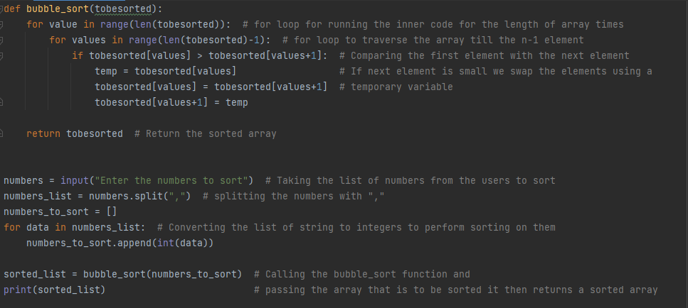
- 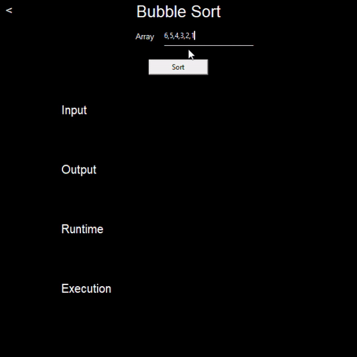
- 2. Insertion Sort
- The elements are picked from the array and placed in the correct position on the left half of the array, this is Insertion Sort.
- Here I have used a function called insertion_sort which takes an unsorted array as the input and then it traverses through the array where the first element is already in the right position then it moves to the second element and check where the second element should be placed to the left of the array this is put under a for loop until all the elements are sorted.
- 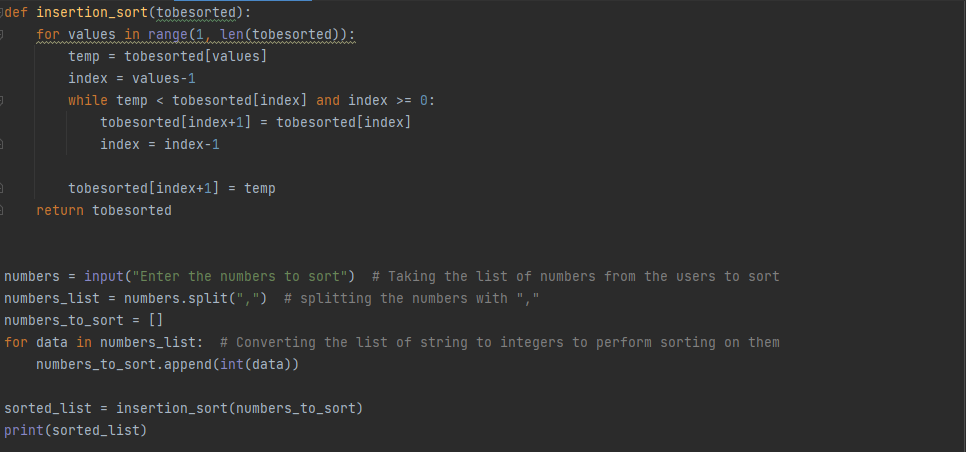
- 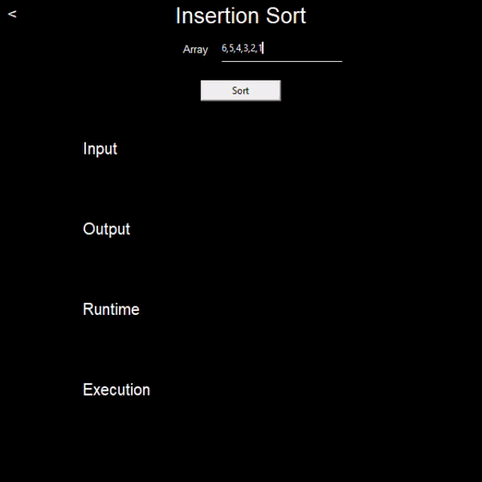
- 3. Selection Sort
- Selection sort is an in-place algorithm that traverses through the array and places the smallest element in the array to the beginning of the list.
- Here I have used a function called selection_sort which takes the unsorted array as the input and consider the first element as the min then it search for the smallest value in the array and then it swaps the smallest element with the min. Then the pointer is moved to the next element. Here the elements left to the pointer are all sorted and to the right are the unsorted once. This is put under a for loop until all the elements are sorted.
- 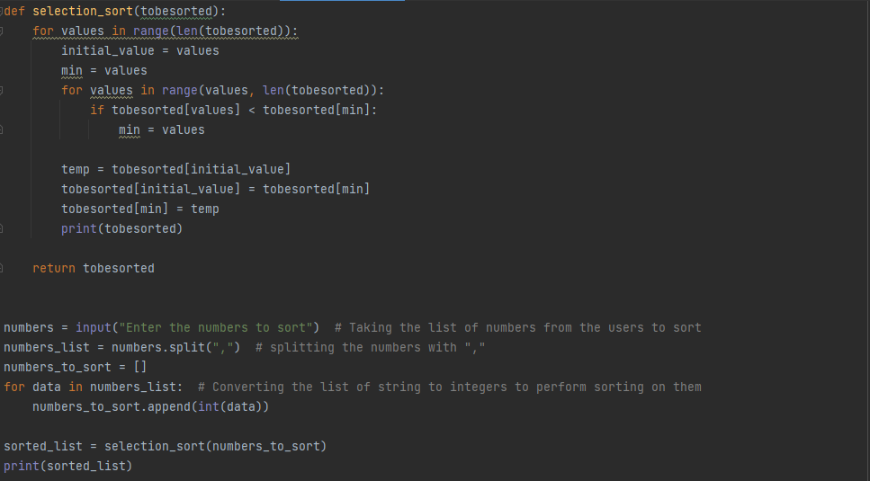
- 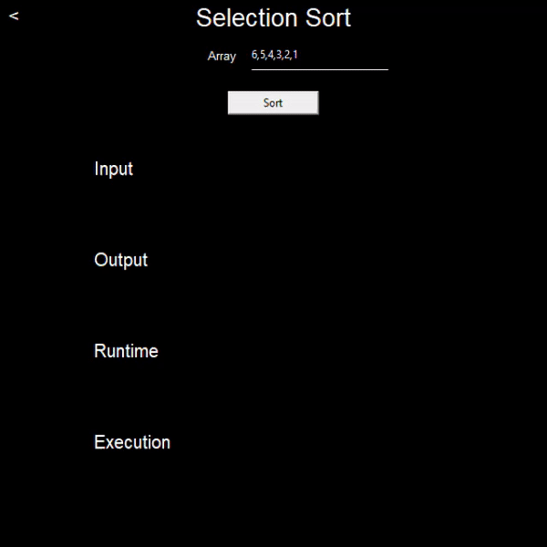
- 4. Merge Sort
- Merge sort uses divide and conquer technique where it splits the array elements into sub array until there is only single elements and then it merges the split arrays which gives you a sorted array.
- Here we use 2 functions merge_sort, merge where merge_sort function takes the unsorted array as the input and the merge function takes the left part and right part of the split array and sorts them and merges them together. This uses a divide and conquer technique and recursion is also used to split the array further into single elements and then it is sorted and merged together.
- 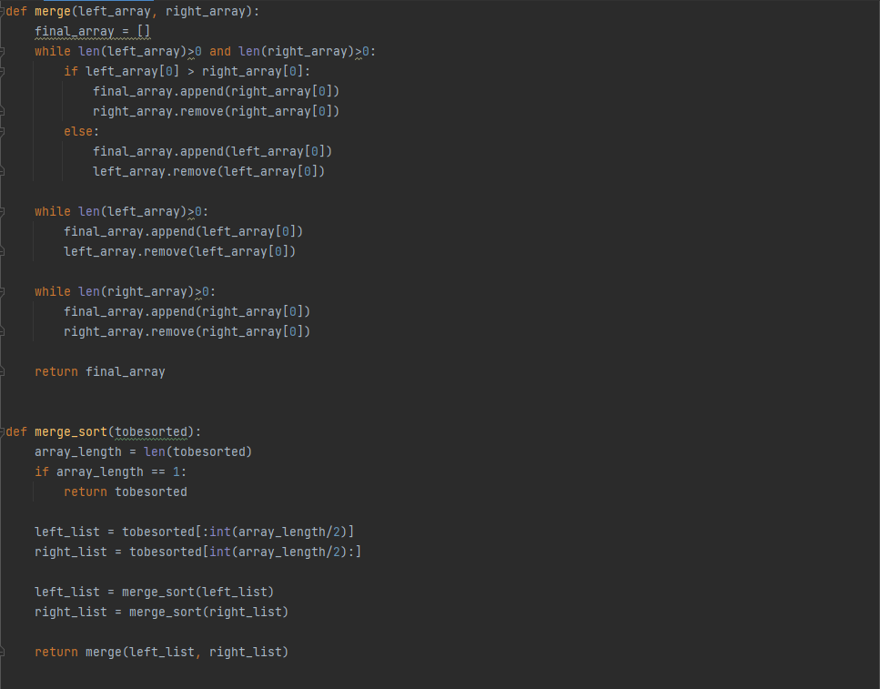
- 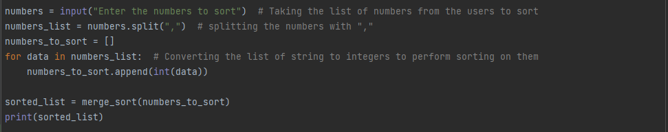
- 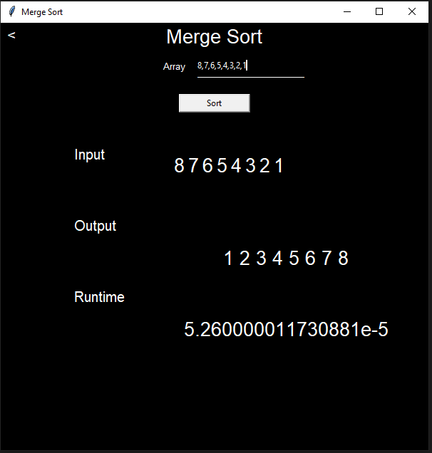
- 5. Quick Sort
- This algorithm also uses divide and conquer technique. Unlike merge sort which divides the array into 2 equal halves it splits the array based on the pivot element which decreases its runtime significantly.
- Quick sort uses 2 functions quick_sort which takes unsorted array and low, high index as the parameters the second function is partition which also takes unsorted array, low and high index as the input parameter. Quick sort function is called recursively to split the array based on the partition here we have taken last value of the array as pivot. The elements smaller to the pivot are placed in the left sub array and the elements greater are placed in the right subarray and then the pivot is place at the center of the array. This is done recursively until the array is completely sorted.
- 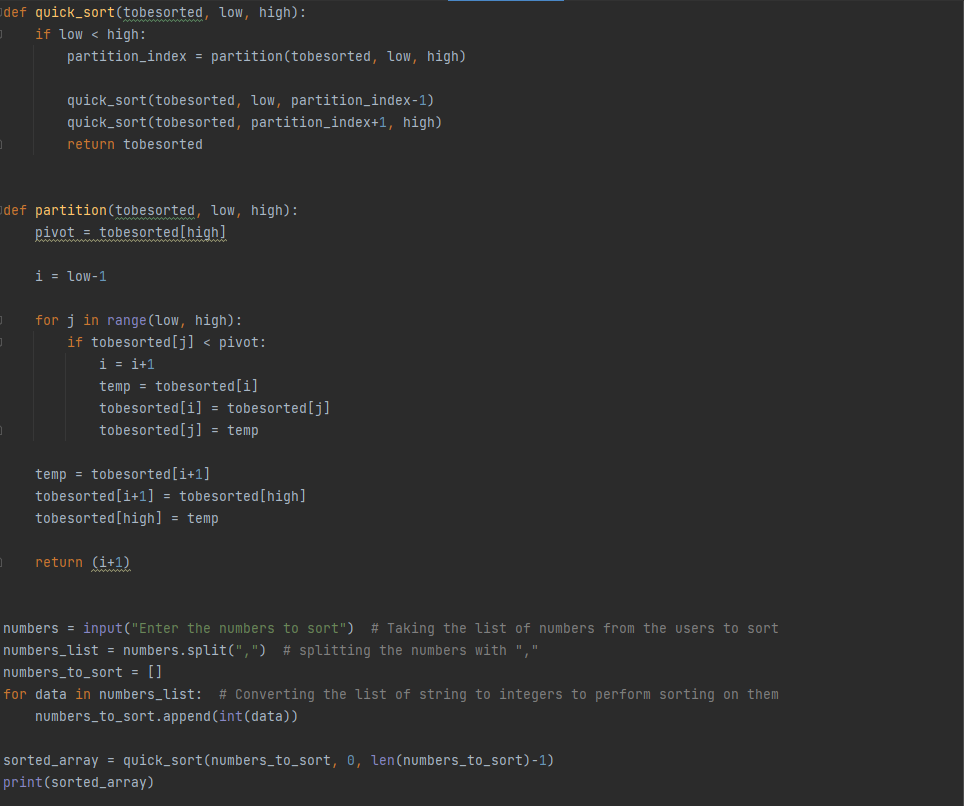
- 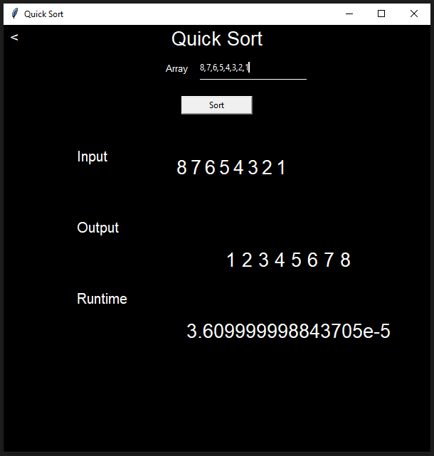
- 6. 3 Median Quick Sort
- Quick sort has the worst runtime complexity when we take the starting or last element as the pivot of the array. So to make it more effective we use the median of the array to get a better runtime complexity.
- Here we first select the median as first element last element and middle element then we sort them in ascending the order and chose the middle element as a pivot this way we can select the best element to perform the quick sort which gives a better output compared to considering the extreme elements.
- 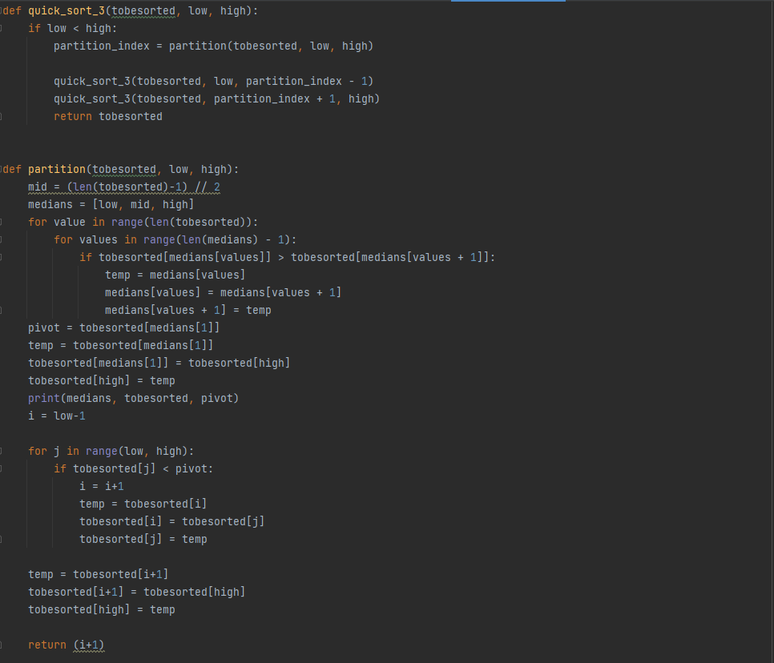
- 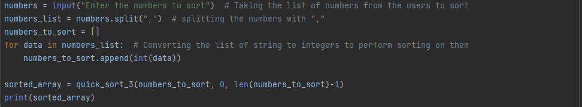
- 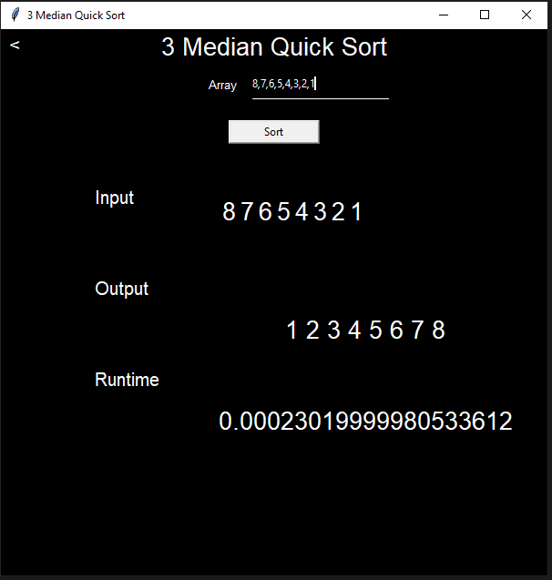
- 7. Heap Sort
- In this algorithm we build a max heap with the given values and then we take the root element and place those values in the array in reverse order.
- We use 2 functions here heap_sort and heapify. heapify is used to form the max heap from the given input array and then we recursively call the heapify and take the highest element and place them in the array in reverse order.
- 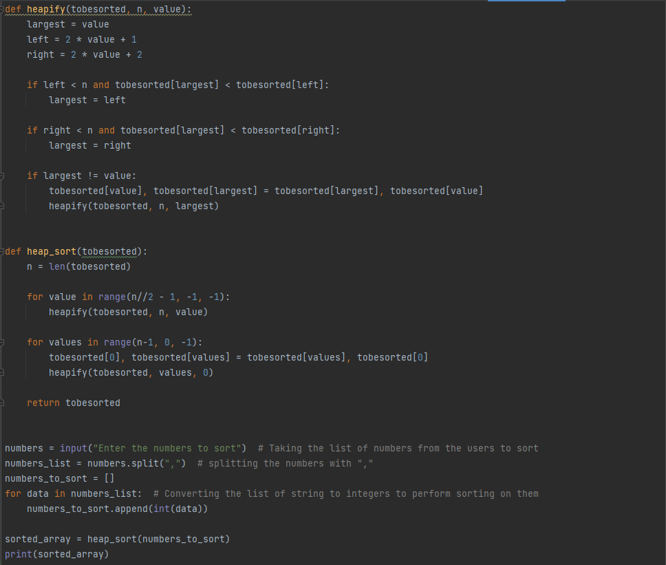
- 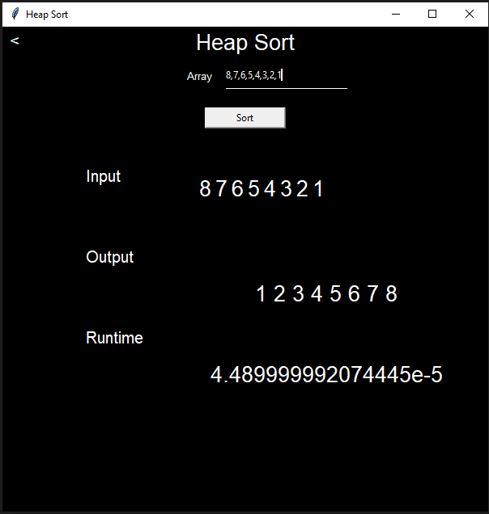
- Runtime Complexity
- 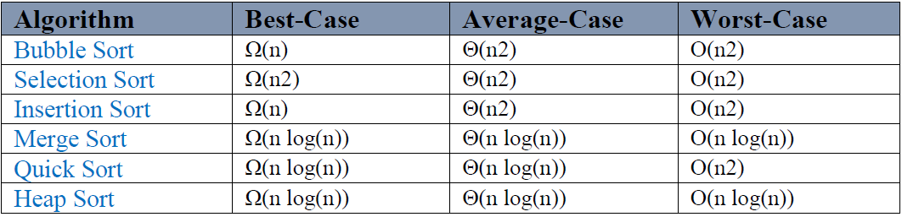
- Graphs
- 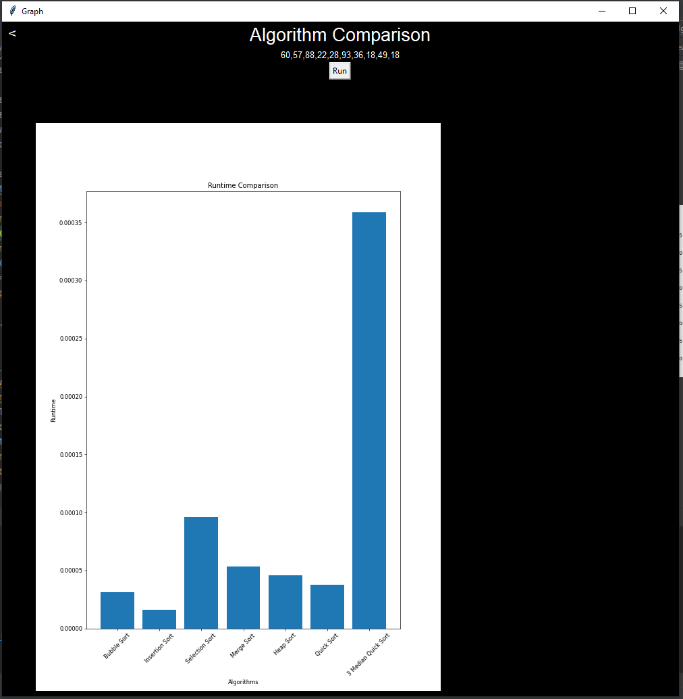
- References
- https://www.geeksforgeeks.org/how-to-bind-multiple-commands-to-tkinter-button/
- https://www.geeksforgeeks.org/sorting-algorithm-visualization-merge-sort/
- https://docs.python.org/3/library/tkinter.html
- https://www.tutorialspoint.com/python/python_gui_programming.htm
- https://www.geeksforgeeks.org/heap-sort/https://github.com/AlbertNightwind/Steam-recommendation-system